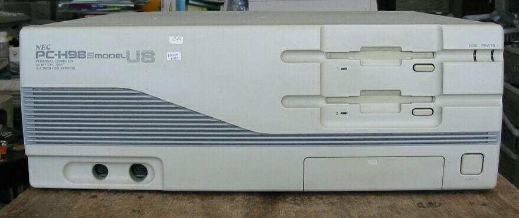
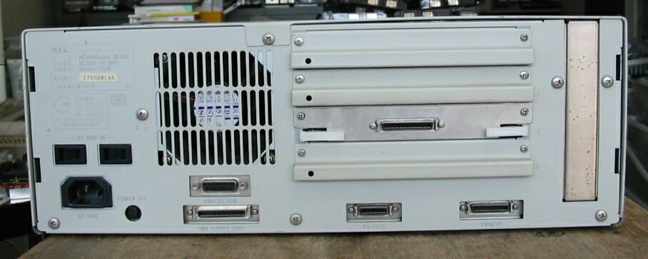

PC-H98SmodelU8-002
ノーマルモードのみの、変わったH98です。
PC-H98SmodelU8-002の正面です。

PC-H98SmodelU8-002の背面です。

PC-H98SmodelU8の主な仕様
型 名 ：PC-H98SmodelU8-002
価 格 ：548000
出荷日 ：91/05
CPUクロック ： (N)i486SX20MHz(386-20MHz相当/8MHz相当)
ROM ： (N)N88-BASIC(86)及びBIOS96KB
標準RAM ： 1.6MB
最大ユーザーズメモリ ： (N)45.6MB
グラフィックVRAM容量 ： (N)256KB(*2)
グラフィックVRAM画素数： (N)640*400
グラフィックVRAM色数 ： (N)4096色中16色2画面、1600万色中16色2画面備考参照
サウンドVRAM ：
テキストVRAM ： 16KB
拡張スロット数 ： 4
拡張スロット電源容量 + 5V ：備考参照
+12V ：備考参照
-12V ：備考参照
標準実装ドライブ FDD ：3.5インチ1M/640KFDD*2 FD1137D
内蔵インタフェースコネクタ：1MFDDI/F プリンタI/F RS-232CI/F
：マウスI/F アナログCRTI/F(15PIN)
漢字 ：標準:第一、第二、拡張
サウンド機能 ：オプション
カレンダ時計 ：μPD4990使用年サポートあり
ＶＣＣＩ適合 ：基準レベル0
使用条件 電圧 ：AC100V±10%
周波数：50/60
温度 ：10～35
湿度 ：20～80(結露なし)
消費電力 標準 (W) ：60
最大 (W) ：175
エネルギー消費効率 (W) ：60
外形寸法 本 体 (mm) (W)：420 (D)：345 (H)：150
キーボード(mm) (W)：435 (D)：180 (H)：34
重量 本体 (Kg) ：11.5
キーボード(Kg) ：1.2
備考 ：オプション使用時:1600万色中256色
：汎用拡張スロットの電源容量: +5V 0.8A(Cバス) 2.0A(Eバス))
： +12V 0.06A(Cバス) 0.4A(Eバス)
： -12V 0.07A(Cバス) 0.4A(Eバス)
：アナログRGBコネクタはノーマルPCー9800シリーズと共通
(2005/08/29記)
変わった98のページに戻る